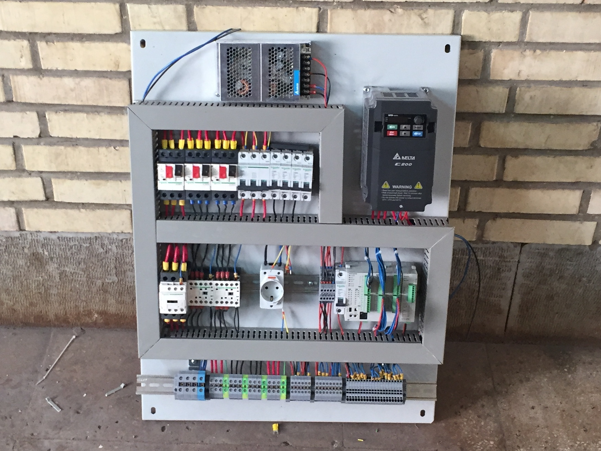
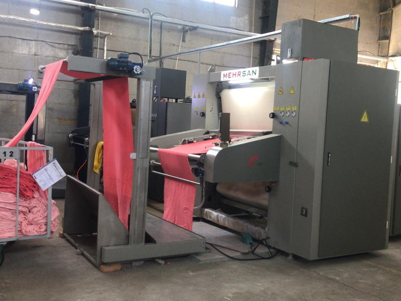
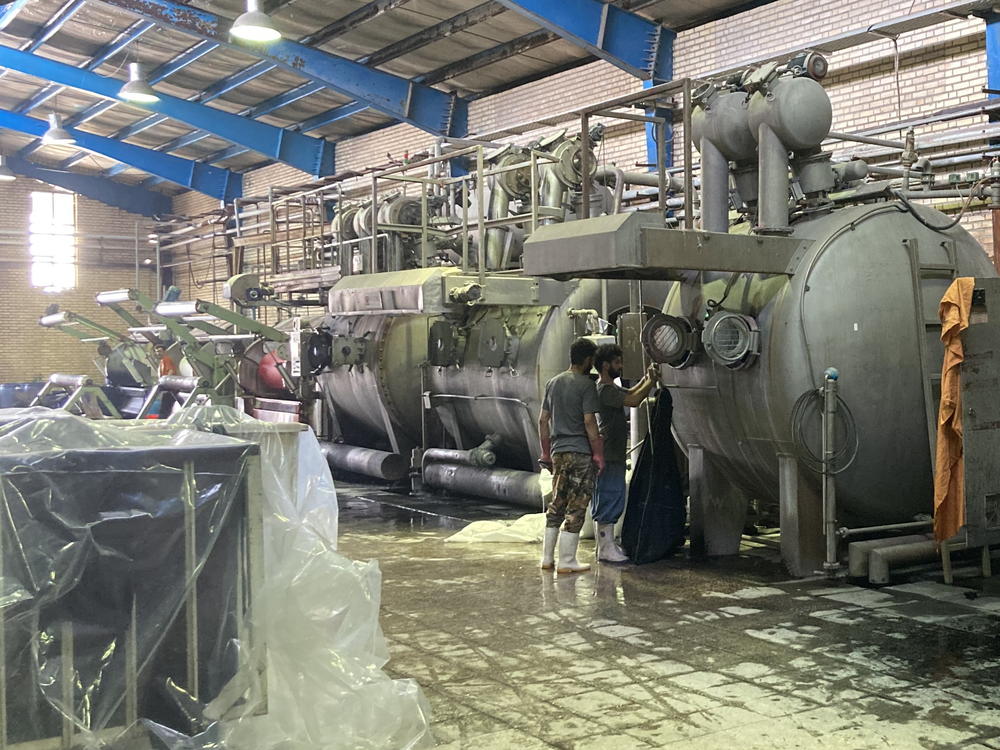
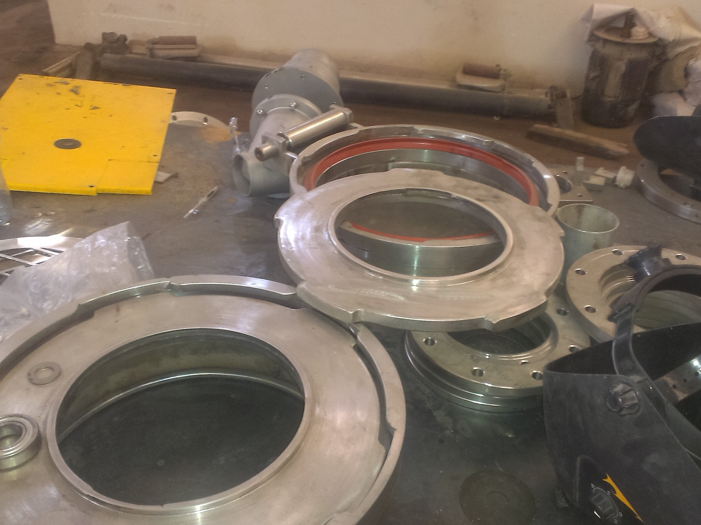
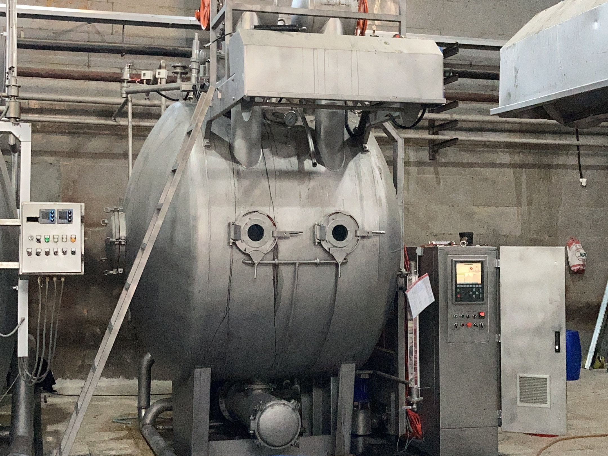
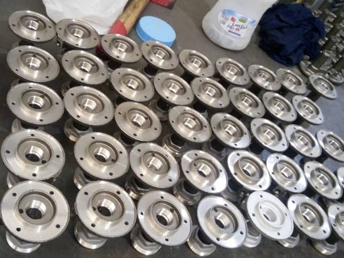

2007

During my studies in Textile Engineering at Isfahan University of
Technology, I had the opportunity to gain valuable industry
experience. I worked part-time as a trainee at Diba Control, where
I delved into the field of industrial electricity and automation
systems. This hands-on experience provided me with a practical
understanding of these systems and deepened my knowledge of how
industrial machines operate. Subsequently, in June 2008, I
embarked on an internship at Alvan Naghsh Pood fabric dyeing
factory. I dedicated my summer holidays and weekends during other
study seasons to this role, allowing me to further develop my
practical skills and expand my insights into the workings of
industrial machinery. These experiences have been instrumental in
shaping my expertise in the field and have fueled my passion for
automation and manufacturing processes.
2009

Following my experience in the textile industry, I embarked on a
collaboration with Mehrsan Machinery as a PLC programmer and
designer. Together, we pioneered the establishment of the first
textile manufacturing company in Iran. Our focus was on designing
and producing various machines essential for the textile
production process. Notably, we successfully developed and
implemented innovative machines such as fabric dryer machines,
balloon squeezer machines, rope opening machines, and fabric
finish compactors. These machines were introduced for the first
time in Iran, showcasing our commitment to innovation and
advancement in the industry. Our achievements extended beyond
national borders, as we installed our machines in prominent
textile centers such as Tehran, Isfahan, Yazd, Mashhad, and even
Peru. This invaluable experience allowed me to deepen my expertise
in PLC programming, design, and manufacturing processes, further
fueling my passion for automation and industrial innovation.
2014

Upon graduating from Isfahan University of Technology in January
2014, I was employed as a Repair and Maintenance Manager at Alvan
Naghsh Pood company. During my tenure, I embarked on a
groundbreaking project to develop a High-Temperature fabric dyeing
machine, marking the first of its kind in Iran. Over the course of
nearly two years, I dedicated my expertise and efforts to this
project, despite encountering challenges stemming from limited
technical and financial support. Nonetheless, through perseverance
and resourcefulness, I successfully automated and modernized the
entire production line. This achievement not only showcased my
ability to innovate and overcome obstacles but also contributed to
the company's overall efficiency and productivity.
2017

Following my decision to serve in the military, I had to leave my
full-time job out of necessity. However, I maintained my
involvement with both Alvan Naghsh Pood and Mehrsan companies as
an automation engineer, working on projects that did not require
continuous and extensive time commitment. During this period, I
took the opportunity to further enhance my skills by delving into
HTML/CSS, Python, and other relevant areas. This proactive
approach allowed me to make the most of my time and prevented any
skills from becoming dormant. As a testament to my newfound
expertise, I even coded my own website using the Bootstrap
framework. This dedication to self-improvement and the utilization
of available resources showcases my commitment to continual growth
and development as an automation engineer.
2019

Upon completing my military service, I took the initiative to
establish my own company specializing in high-temperature fabric
dyeing machinery. From 2019 until May 2021, I successfully
produced three machines, with each one being fully designed by me.
I took great pride in ensuring that a majority of the machine's
components were produced in-house, right from the initial stages
to the final assembly. This included manufacturing dosage pumps,
electricity panels, valves, and tanks, among other essential
parts, within my warehouse. By overseeing the entire production
process, from start to finish, I was able to maintain a high level
of quality control and precision. This hands-on approach and
commitment to self-reliance demonstrate my dedication and passion
for creating innovative and reliable machinery in the field of
high-temperature fabric dyeing.
2019

In addition to my ventures in high-temperature fabric dyeing
machinery, I also co-founded the
Arooz Pneumatic Angled-Seat Valve company
with a close friend. The primary objective behind this endeavor
was to provide support for my machinery and eliminate the need for
importing valves, thereby reducing costs. Our company specializes
in manufacturing valves in various sizes, ranging from DN15 to
DN50. Notably, this specific type of valve was introduced for the
first time in Iran, showcasing our commitment to local innovation
and self-sufficiency. By producing these valves domestically, we
were able to ensure high-quality standards while also contributing
to the growth and advancement of the local industry.